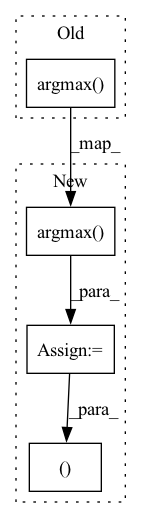

Pattern ID :15022

Before Change
inv_pi_temperature = 1 / self.pi_temperature(self.hparams.temp_lr_weights)
pop_weights = inv_pi_temperature / inv_pi_temperature.mean()
cell_weights = pop_weights[log_probs.argmax(dim=1)]
kl = -(cell_weights * (torch.logsumexp(log_probs, dim=1) + ldj_sum)).mean()
weighted_mmd = self.hparams.alpha * self.compute_mmd(
After Change
inv_pi_temperature = 1 / self.pi_temperature(self.hparams.temp_lr_weights)
pop_weights = inv_pi_temperature / inv_pi_temperature.mean()
argmax = log_probs.argmax(dim=1)
cell_weights = pop_weights[argmax]
kl = -(cell_weights * (torch.logsumexp(log_probs, dim=1) + ldj_sum)).mean()
weighted_mmd = self.hparams.alpha * self.compute_mmd(u)
mmd_h = self.compute_mmd_h(u, argmax)
return kl, weighted_mmd, mmd_h
In pattern: SUPERPATTERN
Frequency: 3
Non-data size: 4
Instances
Fragment ID: 50450657
Project Name: mics-lab/scyan
Commit Name: 48fe8414d1af0691a35a4a037364ea9e52cfccea
Time: 2022-05-19
Author: quentin.blampey@student.ecp.fr
File Name: scyan/module/scyan_module.py
M Class Name: ScyanModule
N Class Name: ScyanModule
M Method Name: losses(3)
N Method Name: losses(3)
M Parent Class: pl.LightningModule
N Parent Class: pl.LightningModule
M File Name: scyan/module/scyan_module.py
N File Name: scyan/module/scyan_module.py
M Start Line: 200
M End Line: 208
N Start Line: 208
N End Line: 216
'>
Before Change
def argmax(logits):
Sample observations by taking the argmax
return convert.bins_to_frequency(logits.argmax(dim=1))
def weighted_argmax(logits):
After Change
def argmax(logits):
Sample observations by taking the argmax
bins = logits.argmax(dim=1)
return bins, convert.bins_to_frequency(bins)
def weighted_argmax(logits):
Sample observations using weighted sum near the argmax
'>
Fragment ID: 50450659
Project Name: maxrmorrison/torchcrepe
Commit Name: b1ba2bb2bcef2f20e5bf8da74ba1117ba45afe00
Time: 2020-06-04
Author: maxrmorrison@gmail.com
File Name: torchcrepe/decode.py
M Class Name: AnonimousClass
N Class Name: AnonimousClass
M Method Name: argmax(1)
N Method Name: argmax(1)
M Parent Class:
N Parent Class:
M File Name: torchcrepe/decode.py
N File Name: torchcrepe/decode.py
M Start Line: 15
M End Line: 15
N Start Line: 15
N End Line: 16
'>
Before Change
// debugging/testing if arg passed
if verbose:
print("Negative phis:", phis_count)
return preds[np.argmax(np.array(phis_count))]
// alignment by centering + rotation to compute optimal RMSD
After Change
phis_count.append( (np.array(phis)<0).sum() )
idx = np.argmax(phis_count)
// debugging/testing if arg passed
if verbose:
print("Negative phis:", phis_count)
return preds[idx], stresses[idx]
// alignment by centering + rotation to compute optimal RMSD
// adapted from : https://github.com/charnley/rmsd/
'>
Fragment ID: 50450658
Project Name: lucidrains/alphafold2
Commit Name: 98e16ad2931a27f90e05df940cff72c00074028d
Time: 2021-01-17
Author: ericalcaide1@gmail.com
File Name: utils.py
M Class Name: AnonimousClass
N Class Name: AnonimousClass
M Method Name: fix_mirrors_numpy(5)
N Method Name: fix_mirrors_numpy(4)
M Parent Class:
N Parent Class:
M File Name: utils.py
N File Name: utils.py
M Start Line: 304
M End Line: 318
N Start Line: 311
N End Line: 331